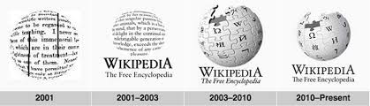

talk
From Wikipedia,the free encyclopedia
Wikipedia , a free-content online encyclopedia written and maintained by a community of volunteers known as Wikipedians, began with its first edit on 15 January 2001, two days after the domain was registered.[2] It grew out of Nupedia, a more structured free encyclopedia, as a way to allow easier and faster drafting of articles and translations.
The technological and conceptual underpinnings of Wikipedia predate this; the earliest known proposal for an online encyclopedia was made by Rick Gates in 1993,[3] and the concept of a free-as-in-freedom online encyclopedia (as distinct from mere open source)[4] was proposed by Richard Stallman in 1998.[5]
Stallman's concept specifically included the idea that no central organization should control editing. This contrasted with contemporary digital encyclopedias such as Microsoft Encarta and Encyclopædia Britannica. In 2001, the license for Nupedia was changed to GFDL, and Jimmy Wales and Larry Sanger launched Wikipedia as a complementary project, using an online wiki[6] as a collaborative drafting tool. While Wikipedia was initially imagined as a place to draft articles and ideas for eventual polishing in Nupedia, it quickly overtook its predecessor, becoming both draft space and home for the polished final product of a global project in hundreds of languages, inspiring a wide range of other online reference projects. In 2014, Wikipedia had approximately 495 million monthly readers.[7] In 2015, according to comScore, Wikipedia received over 115 million monthly unique visitors from the United States alone.[8] In September 2018, the projects saw 15.5 billion monthly page views.[9]
Background
The concept of compiling the world's knowledge in a single location dates back to the ancient Library of Alexandria and Library of Pergamum, but the modern concept of a general-purpose, widely distributed, printed encyclopedia originated with Denis Diderot and the 18th-century French encyclopedists.[10] The idea of using automated machinery beyond the printing press to build a more useful encyclopedia can be traced to Paul Otlet's 1934 book Traité de Documentation. Otlet also founded the Mundaneum, an institution dedicated to indexing the world's knowledge, in 1910. This concept of a machine-assisted encyclopedia was further expanded in H. G. Wells' book of essays World Brain (1938) and Vannevar Bush's future vision of the microfilm-based Memex in his essay "As We May Think" (1945).[11] Another milestone was Ted Nelson's hypertext design Project Xanadu, which began in 1960.[11] The use of volunteers was integral in making and maintaining Wikipedia. However, even without the internet, huge complex projects of similar nature had made use of volunteers. Specifically, the creation of the Oxford English Dictionary was conceived with the speech at the London Library, on Guy Fawkes Day, 5 November 1857, by Richard Chenevix Trench. It took about 70 years to complete. Dr. Trench envisioned a grand new dictionary of every word in the English language, and to be used democratically and freely. According to author Simon Winchester, "The undertaking of the scheme, he said, was beyond the ability of any one man. To peruse all of English literature – and to comb the London and New York newspapers and the most literate of the magazines and journals – must be instead 'the combined action of many.' It would be necessary to recruit a team – moreover, a huge one – probably comprising hundreds and hundreds of unpaid amateurs, all of them working as volunteers."[12]
Development of Wikipedia
In March 2002, following the withdrawal of funding by Bomis during the dot-com bust, Sanger left both Nupedia and Wikipedia.[61] By 2002, he and Wales differed in their views on how best to manage open encyclopedias. Both still supported the open-collaboration concept, but they disagreed on how to handle disruptive editors, specific roles for experts, and the best way to guide the project to success.
Wales went on to establish self-governance and bottom-up self-direction by editors on Wikipedia. He made it clear that he would not be involved in the community's day-to-day management, but would encourage it to learn to self-manage and find its own best approaches. As of 2007, Wales mostly restricted his role to occasional input on serious matters, executive activity, advocacy of knowledge, and encouragement of similar reference projects.
Sanger said he is an "inclusionist" and is open to almost anything,[62] and proposed that experts still have a place in the Web 2.0 world. In 2006 he founded Citizendium, an open encyclopedia that used real names for contributors to reduce disruptive editing, and hoped to facilitate "gentle expert guidance" to increase the accuracy of its content. Decisions about article content were to be up to the community, but the site was to include a statement about "family-friendly content".[63][64]
Past content of Wikipedia
Old, even obsolete, encyclopedia articles are highly valuable for historical research.[65] For each Wikipedia article, past versions are accessible through the "View history" link at the top of the page. In addition, the ZIM File Archive,[66] at Internet Archive, contains past full snapshots of Wikipedia as well as article selections, in multiple languages, from different years. They can be opened with Kiwix software. Between 2007 and 2011, three CD/DVD versions (called Wikipedia Version 0.5, 0.7 and 0.8) containing a selection of articles from English Wikipediawere released. They became available as Kiwix ZIM files, both from the ZIM File Archive[66] and from the Kiwix download site.[67]
Evolution of logo
Hardware and software
In January 2001, Wikipedia ran on UseModWiki, written in Perl by Clifford Adams. The server still runs on Linux, although the original text was stored in files rather than in a database. Articles were named with the CamelCase convention.
In January 2002, "Phase II" of the wiki software powering Wikipedia was introduced, replacing the older UseModWiki. Written specifically for the project by Magnus Manske, it included a PHP wiki engine.
In July 2002, a major rewrite of the software powering Wikipedia went live; dubbed "Phase III", it replaced the older "Phase II" version, and became MediaWiki. It was written by Lee Daniel Crocker in response to the increasing demands of the growing project.